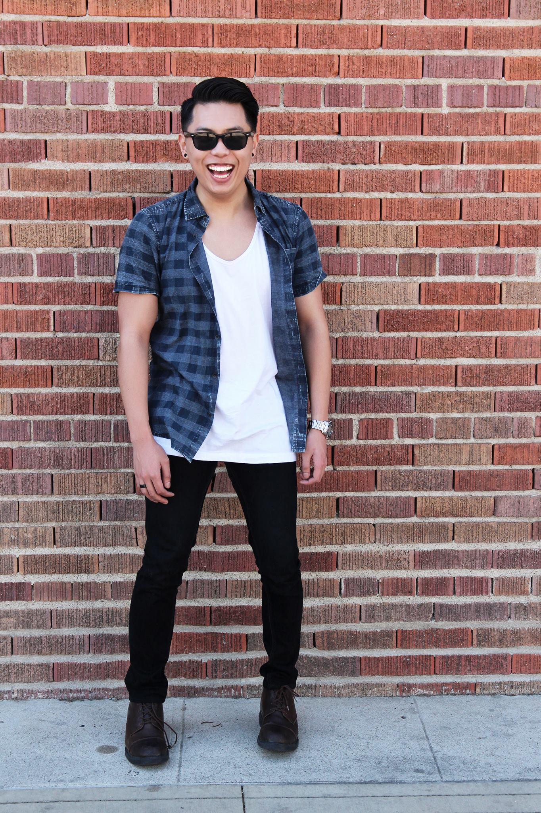

Hello there! My name is Nathan Leung, and I am currently a full-time clinical researcher at the Northwestern University Feinberg School of Medicine.
I am a three-year graduate of the University of Southern California with a Bachelor of Science degree in Health Promotion and Disease Prevention Studies from the Keck School of Medicine.
As a US citizen and a permanent resident of Hong Kong, I hope to apply my experience with clinical research and public health towards management of research projects and development of novel technologically-based healthcare outlets not only in the United States, but also an international setting. After graduating, I am also excited to pursue an advanced clinical degree in medicine or nursing in addition to these other opportunities.
I am also a rabid foodie; always on the lookout for up-and-coming restaurants and classic regional specialties to try. If I find something I really enjoyed, you can be sure that I'm going to try to ask for the recipe so I can recreate those dishes at home.
Whether you have a new challenge for me to tackle or a restaurant recommendation that I have to try, feel free to contact me nathanhleung@gmail.com.
About Me

Connect with Me